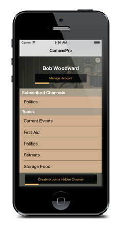
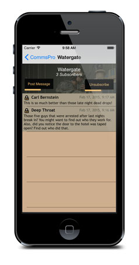
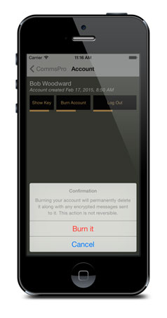

“Comms Pro” is an iPhone application for secure and anonymous communication.
Finally a solution that provides highly-secure communication, that is both easy to use and affordable.
Comms Pro enables secure, anonymous communication through both hidden encrypted channels as well as unencrypted messaging through public channels. With Comms and Comms Pro, your privacy is secured. User accounts are free and disposable. Comms (free edition) offers anonymous communications over public channels.
There are many secure and free communication methods, but they are complicated and difficult to set up. There are secure and easy communication methods, but they are expensive and lack privacy controls. Comms Pro is the first system that offers the combination of high security, affordability, ease of use and anonymity.


